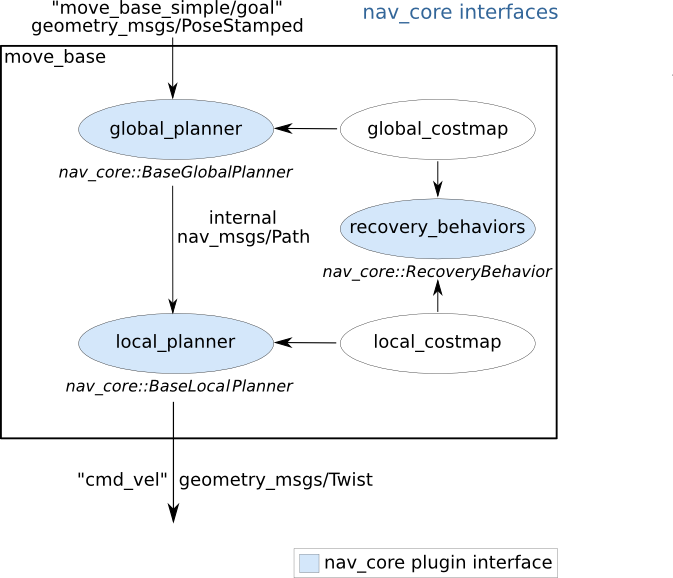

Navigation Stack
コンテンツ
はじめに
Navigation Stack概要
Navigation Stackとは
Navigation Stackの入出力
Transform Tree
測域センサ情報（レーザースキャン）
測域センサ情報（ポイントクラウド）
オドメトリ情報
地図
駆動（速度）命令
その他のメッセージ型
サービス型
アクション型
各パッケージ仕様
move_baseメイン
move_base
nav_core
自己位置推定関連
amcl
fake_localization
地図配信
map_server
コストマップ関連
costmap_2d
voxel_grid
グローバルプランナー関連
nav_fn
global_planner
carrot_planner
ローカルプランナー関連
base_local_planner
dwa_local_planner
リカバリー動作関連
clear_costmap_recovery
rotate_recovery
move_slow_and_clear
nav_core
¶
目次
1.
概要
2.
nav_coreの概要
3.
BaseGlobalPlanner
3.1
APIの安定性
3.2
BaseGlobalPlanner C++ API
4.
BaseLocalPlanner
4.1
APIの安定性
4.2
BaseLocalPlanner C++ API
5.
RecoveryBehavior
5.1
APIの安定性
5.2
RecoveryBehavior C++ API
1. 概要
¶
このパッケージは、ナビゲーション固有のロボット動作の共通インタフェースを提供します。 現在、このパッケージはBaseGlobalPlanner、BaseLocalPlanner、RecoveryBehaviorインタフェースを提供します。これらのインタフェースを使用して、同じインタフェースに準拠する新しいバージョンのプランナー、ローカルコントローラー、またはリカバリ動作を簡単に交換できるアクションを構築できます。
管理状態：管理済み
管理者：David V. Lu!! <davidvlu AT gmail DOT com>, Michael Ferguson <mfergs7 AT gmail DOT com>, Aaron Hoy <ahoy AT fetchrobotics DOT com>
著者：Eitan Marder-Eppstein,
contradict
@
gmail
.
com
ライセンス：BSD
ソース：git
https://github.com/ros-planning/navigation.git
(branch: melodic-devel)
2. nav_coreの概要
¶
nav_coreパッケージには、Navigationスタックの主要なインタフェースが含まれています。
move_base
ノードで
プラグイン
として使用する全てのプランナーとリカバリ動作は、これらのインタフェースに従う必要があります。

出典:
http://wiki.ros.org/nav_core
3. BaseGlobalPlanner
¶
nav_core::BaseGlobalPlannerは、ナビゲーションで使用されるグローバルプランナーのためのインタフェースを提供します。
move_base
ノードのプラグインとして記述されたすべてのグローバルプランナーは、このインタフェースに従う必要があります。nav_core::BaseGlobalPlannerインタフェースを使用する現在のグローバルプランナーは次のとおりです。
global_planner
- navfnのより柔軟な代替として構築された、高速で補間されたグローバルプランナー。（pluginlib名： "global_planner/GlobalPlanner"）
navfn
- ナビゲーション機能を使用してロボットのパスを計算するグリッドベースのグローバルプランナー。（pluginlib名： "navfn/NavfnROS"）
carrot_planner
- ユーザー指定の目標点を取得し、その目標点が障害物にある場合でも、ロボットをできるだけ近くに移動しようとする単純なグローバルプランナー。（pluginlib名： "carrot_planner/CarrotPlanner"）
3.1 APIの安定性
¶
C++ API が安定しています。
3.2 BaseGlobalPlanner C++ API
¶
nav_core :: BaseGlobalPlannerのC ++ APIに関するドキュメントは、
BaseGlobalPlannerのドキュメント
にあります。
4. BaseLocalPlanner
¶
nav_core :: BaseLocalPlannerは、ナビゲーションで使用されるローカルプランナーのためのインタフェースを提供します。
move_base
ノードのプラグインとして記述されたすべてのローカルプランナーは、このインタフェースに従う必要があります。nav_core :: BaseLocalPlannerインターフェースを使用する現在のローカルプランナーは次のとおりです。
base_local_planner
- ローカルコントロールへの Dynamic Window Approach（DWA）およびTrajectory Rollout Approachの実装を提供します。
dwa_local_planner
-
base_local_planner
のDWAよりもクリーンで理解しやすいインタフェースを備え、より柔軟性の高いホロノミックロボット用のy軸変数を備えたモジュール式DWA実装です。
eband_local_planner
- SE2マニホールドでのElastic Bandメソッドを実装します。
teb_local_planner
- オンライン軌道最適化のためのTimed-Elastic-Bandメソッドを実装します。
4.1 APIの安定性
¶
C++ API が安定しています。
4.2 BaseLocalPlanner C++ API
¶
nav_core :: BaseLocalPlannerのC ++ APIに関するドキュメントは、
BaseLocalPlannerドキュメント
にあります。
5. RecoveryBehavior
¶
nav_core::RecoveryBehaviorは、ナビゲーションで使用されるリカバリ動作のインタフェースを提供します。
move_base
ノードのプラグインとして記述されたすべてのリカバリ動作は、このインタフェースに準拠する必要があります。nav_core::RecoveryBehaviorインタフェースを使用した現在のリカバリ動作は次のとおりです。
clear_costmap_recovery
- move_baseが使用するコストマップを、ユーザーが指定した範囲の外側について、静的マップの値に戻すリカバリ動作。
rotate_recovery
- ロボットを360度回転させてスペースをクリアすることを試みるリカバリ動作。
5.1 APIの安定性
¶
C++ API が安定しています。
5.2 RecoveryBehavior C++ API
¶
nav_core :: RecoveryBehaviorのC ++ APIに関するドキュメントは、
RecoveryBehaviorのドキュメント
にあります。
{kind=link}